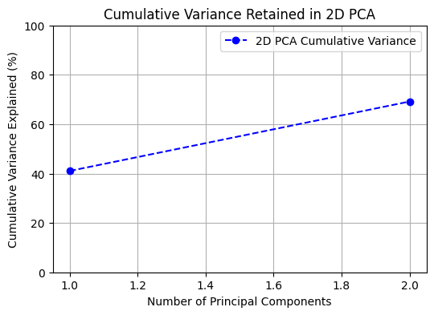

Stack Overflow: A Pillar of the Developer Community
Stack Overflow is the world's largest and most prominent platform designed for developers and programmers to learn, share knowledge, and collaborate. Established in 2008 by Jeff Atwood and Joel Spolsky, the platform was created to address critical challenges faced by developers seeking accurate and timely programming solutions. Operating as a question-and-answer forum, Stack Overflow facilitates peer-reviewed responses to technical queries across a broad spectrum of programming languages, frameworks, and tools. By fostering high-quality knowledge exchange, the platform builds a credibility system where users earn reputation points and achievement-based badges for their contributions, enhancing community trust and engagement.
With over 22 million questions and hundreds of millions of monthly users, Stack Overflow has become a cornerstone of the global software development ecosystem. The platform empowers developers to solve complex problems efficiently while supporting continuous learning and technical growth. Many professionals rely on Stack Overflow as their first point of reference when debugging issues, exploring new technologies, or improving their skills. Its mission to "help developers write the script of the future" underscores its significance in driving technological innovation and progress in the industry.
The Impact of AI Tools on Stack Overflow
The rapid rise of AI tools, particularly generative models such as ChatGPT, has introduced significant challenges to Stack Overflow’s operational model. These AI tools provide instant, conversational responses to programming-related questions, disrupting traditional forums by reducing the need for users to post questions and await peer-reviewed answers. Consequently, the platform has experienced a noticeable decline in user activity and engagement. Research indicates a 16% reduction in weekly posts soon after the release of ChatGPT, suggesting that developers are increasingly turning to AI for quick solutions rather than contributing to Stack Overflow’s knowledge base.
This decline has directly affected the core pillars of the platform: user-generated content, community discussions, and expert contributions. Many experienced users who previously provided high-quality answers have reduced their activity on the platform, resulting in a diminished pool of expertise. This impacts both the diversity and depth of available solutions, ultimately threatening the collaborative knowledge-sharing ecosystem upon which Stack Overflow thrives.
Additionally, the increased presence of AI-generated responses on Stack Overflow itself has presented further challenges. Moderation teams have reported a surge in low-quality answers generated by AI tools. While these responses may appear accurate on the surface, they often lack context or detailed reasoning, placing a greater burden on moderators to filter and maintain the platform's content quality.
According to Stack Overflow's 2024 Developer Survey, 76% of developers are actively using or considering AI tools to aid their programming tasks. Despite the growing adoption of AI, 43% of respondents expressed concerns regarding the reliability of AI-generated answers, particularly in complex or nuanced scenarios. Nonetheless, developers continue to favor AI for its speed and convenience, further reducing reliance on community-driven solutions.

Project Motivation
The motivation behind this project is to analyze Stack Overflow's user data and activity patterns using machine learning techniques. By identifying key trends, including shifts in user engagement and the influence of AI tools, the project aims to uncover factors that impact the platform's long-term sustainability. Understanding these patterns can provide actionable insights to help Stack Overflow strategize for future growth, improve user retention, and maintain its position as a vital resource for the global developer community.
Objectives
The objective of this project is to derive insights into user engagement and activity trends on Stack Overflow by leveraging data analysis and machine learning techniques. The study focuses on exploring and addressing key research questions, including patterns of user participation, reputation dynamics, content interaction, and the influence of external factors like AI tools. These insights aim to support the development of strategies to enhance user retention, improve content quality, and sustain long-term platform growth.
- 1. Which user types (e.g., experienced, new, or moderators) are most active on Stack Overflow?
- 2. What factors influence user reputation growth over time?
- 3. Which tags or topics lead to the highest engagement (views, upvotes, answers)?
- 4. How does user activity (e.g., number of posts, last access date) change over time?
- 5. What types of users are more likely to leave the platform (low engagement, declining activity, etc.)?
- 6. Which types of questions (based on topic, length, or complexity) are most likely to receive answers?
- 7. How does the time of posting (day of the week, time of day) impact the likelihood of receiving quick responses?
- 8. What are the common characteristics of highly upvoted or highly answered questions?
- 9. How do AI tools influence the frequency and type of questions being asked?
- 10. Which tags or topics have seen a decline in user engagement due to the rise of AI tools?
- 11. What user behaviors are predictive of long-term retention and active participation on the platform?
- 12. Which regions or locations (if location data is available) have the highest or lowest participation rates on Stack Overflow?
- 13. What factors (e.g., reputation changes, badges earned) predict whether a user will become a top contributor?
- 14. How can Stack Overflow tailor its platform to encourage users to stay engaged despite competition from AI tools?
- 15. How might user activity and engagement trends evolve over the next few years given the current usage patterns and the increasing adoption of AI-based coding tools?
Data Collection
Effective data collection is crucial in any data-driven project, particularly when using machine learning to analyze trends and make predictions. Reliable and high-quality data enables accurate model training, which, in turn, provides better insights and predictions. In this project, user data from Stack Overflow was collected to analyze user engagement, activity trends, and platform growth patterns. Since the platform is large and continuously evolving, accessing up-to-date data through manual extraction would be inefficient and error-prone. Instead, APIs (Application Programming Interfaces) provide a systematic way to collect structured data in real-time.
APIs allow automated access to vast datasets while ensuring that data retrieval follows the platform's usage policies and structure. By using Stack Exchange's API, this project leveraged a reliable method to retrieve relevant user information, including reputation, location, activity dates, and earned badges. This API offers endpoints that provide data in a machine-readable JSON format, making it ideal for large-scale data collection and processing.
This automated approach ensures that the data collection process is efficient, scalable, and capable of handling large volumes of user data from Stack Overflow. By using APIs, the project can be easily updated with fresh data in the future, enabling continuous analysis and improvement of machine learning models.
The script used for data collection follows a structured approach:
- API Request and Pagination: The script builds API requests to fetch user data in batches of 100 profiles per request. It supports pagination to iterate through multiple pages of data, starting from page 1 and continuing until all available data is retrieved.
- Data Saving: The response data from each API call is saved both as a JSON file and a CSV file for analysis. The JSON file stores the complete API response, preserving all details, while the CSV file organizes key fields in tabular format.
- Dynamic Extraction: The script dynamically extracts important fields, including user ID, display name, reputation, location, profile image, and badge counts. It also compiles information about collectives (groups or communities) the users may belong to.
- Folder and File Organization: To keep the collected data organized, the script creates separate folders for JSON and CSV files. Each file is named using a timestamp and page number, ensuring easy identification and retrieval.
- Rate Limiting: To prevent exceeding the API's request limits, the script includes a short delay between requests. This helps maintain compliance with API usage guidelines while avoiding service interruptions.
- Error Handling: The script verifies the success of each API call by checking the HTTP status code. If a request fails, an error message is displayed, and the data collection loop terminates gracefully. The loop also ends when there are no more pages of data to fetch.
Stack Exchange API Documentation - Link to API details
Python Script for Data Extraction - Data Extraction Script
Data Preparation
After extracting the data from the Stack Exchange API, the next crucial step was data preparation. Since the API returned multiple CSV files, each containing a batch of user records, a Python script was developed to merge these individual files into a single dataset. The script scans a directory containing the CSV files, reads each file into a Pandas DataFrame, and then concatenates all DataFrames into one comprehensive dataset. This merged file, containing approximately 100,000 records, provides a centralized and organized dataset that will be used for further analysis and machine learning model training.
This step ensures that all relevant data is consolidated, allowing for efficient analysis without the need to repeatedly access or process multiple smaller files. Proper data preparation is essential to eliminate redundancy, handle errors, and structure data in a way that optimizes subsequent data exploration and model development.
Python Script for Data Preparation - Data Preparation Script
Data Cleaning
Importance of Data Cleaning
Data cleaning is an essential step in preparing data for analysis and model training. Real-world data often contains missing values, inconsistencies, and errors, which can lead to unreliable and inaccurate insights. Unclean data negatively impacts the performance of machine learning models, leading to bias and misleading results. By thoroughly cleaning the data, we ensure its quality and reliability, allowing models to make accurate predictions. Effective data cleaning helps to minimize errors, improves model performance, and provides meaningful insights during data analysis.
The data cleaning process began with analyzing the dataset structure, including columns, data types, and sample data points. Both categorical and numerical fields were reviewed to identify data points requiring further cleaning. Missing values were assessed by calculating the percentage of missing entries per column. Columns with excessively high missing values, such as collective_names, were dropped due to limited analytical value. Columns with moderate missing data, such as website_url and accept_rate, were handled appropriately. For numerical columns like accept_rate, missing values were filled with the median. Missing values in categorical columns like display_name were replaced with a unique string pattern, username_{user_id}. Duplicate records were identified and removed to ensure data integrity. Derived features were added to enhance analytical capabilities, including account_age_years, calculated from the creation_date column to analyze user engagement trends over time. Data type conversions were performed to standardize formats. Date fields such as creation_date, last_modified_date, and last_access_date stored in epoch format were converted to datetime format for time-based analysis. These steps resulted in a clean, structured dataset, free of missing values, duplicates, and data type inconsistencies. The refined dataset is prepared for exploratory analysis and machine learning model training.
Data Attributes from Raw Data

Merged Raw Data
Cleaned Data
Python Code for Data Cleaning - Data Cleaning Code
Raw Data - Link to Raw Data
Cleaned Data - Lint to Cleaned Data
Data Visualization
Visualization 1: Total Badge Count by Type
- - Distribution Shape: The badge distribution shows that bronze badges are the most common, followed by silver, while gold badges are comparatively rare.
- - Central Tendency: The count difference between badge types suggests that users are more frequently awarded lower-tier badges.
- - Spread: The spread is significant between the badge types, with a substantial gap between bronze and gold.
- - Outliers: There are no evident outliers since the count of each badge type follows the expected hierarchical structure of difficulty and rarity.
- - Overall Interpretation: The visualization indicates that while users are highly rewarded with bronze and silver badges, gold badges remain exclusive to top contributors or achievements.
Visualization 2: Reputation Distribution

- - Distribution Shape: The reputation distribution is heavily right-skewed, with most users having low reputation scores.
- - Central Tendency: The majority of users have a reputation close to zero, indicating a high concentration near the lower end.
- - Spread: The range of reputation values extends to over 1.4 million, showing a wide disparity between users with low and high reputation.
- - Outliers: A few users have extremely high reputations, representing outliers with significant contributions or long-standing presence.
- - Overall Interpretation: The reputation distribution highlights that while a small subset of users is highly reputed, the majority are new or infrequent contributors to the platform.
Visualization 3: Account Age vs Reputation

- - Visualization: A scatterplot representing the relationship between account age (in years) and user reputation, with points plotted in a light red color.
- - Insight: The plot shows a positive correlation, where older accounts tend to have higher reputations. However, many users with older accounts still maintain low reputation scores, indicating that active contribution over time is necessary to build reputation, rather than account longevity alone.
Visualization 4: Reputation Change Over the Year
- - Distribution Shape: The annual reputation change distribution is highly skewed, with most users showing minimal to zero change in reputation.
- - Central Tendency: The majority of reputation changes are centered near zero, indicating little or no yearly variation for most users.
- - Spread: The reputation change values span a broad range, with a few users experiencing significant positive or negative changes.
- - Outliers: A small number of users have large positive reputation increases, representing exceptional activity or contributions within a year.
- - Overall Interpretation: This distribution suggests that while most users do not experience major changes in reputation annually, a select few have substantial fluctuations driven by their activity levels on the platform.
Visualization 5: Badge Counts by User
- - Distribution Shape: The distribution of total badges per user is highly skewed, with the majority of users having very few badges.
- - Central Tendency: Most users have a total badge count close to zero, indicating minimal recognition or contributions.
- - Spread: The badge count ranges from 0 to over 10,000, demonstrating wide variability in user achievements on the platform.
- - Outliers: A few users have extremely high badge counts, representing highly active and accomplished contributors.
- - Overall Interpretation: The badge distribution indicates that while a select group of users earn significant recognition through badges, the vast majority engage less frequently or with fewer impactful contributions.
Visualization 6: User Count by Account Age Range

- - Distribution Shape: The distribution shows a peak in user count for accounts aged between 12 to 15 years, with a steady decrease in older and newer accounts.
- - Central Tendency: The majority of users fall within the 10 to 18-year age groups, suggesting a high concentration of users with long-standing accounts.
- - Spread: The user base is unevenly spread, with fewer users in the less than 1-year and greater than 20-year account age ranges.
- - Outliers: The newest accounts (less than 1 year old) and the oldest accounts (over 20 years old) have minimal user representation.
- - Overall Interpretation: The platform maintains a strong core of users with significant account longevity, reflecting long-term engagement and retention trends.
Visualization 7: Distribution of Accept Rate
- - Distribution Shape: The accept rate distribution shows a right-skewed pattern, with a peak around the 80% mark.
- - Central Tendency: A significant portion of users have an accept rate between 70% and 90%, indicating a strong tendency toward high acceptance rates.
- - Spread: Accept rates vary widely, ranging from 0% to 100%, though lower acceptance rates are much less frequent.
- - Outliers: Very low accept rates near 0% have minimal representation in the dataset.
- - Overall Interpretation: The graph highlights that the majority of users maintain a high accept rate, suggesting consistent user engagement with answers received on the platform.
Visualization 8: Reputation vs Accept Rate

- - Visualization: A scatterplot showing the relationship between 'Reputation' and 'Accept Rate', with data points distributed across varying values of both variables.
- - Insight: The plot reveals a positive trend where higher accept rates tend to be associated with higher reputations. However, there is a significant concentration of users with low reputation across all accept rate levels, indicating that reputation growth might require consistent high acceptance over time or other factors.
Visualization 9: Box Plot of Reputation by User Type

- - Visualization: A box plot showing the distribution of user reputation categorized by user types: moderator, registered, and unregistered.
- - Insight: Registered users show a wide spread in reputation with many outliers, including extremely high reputations. Moderators have a relatively consistent reputation range with fewer outliers, while unregistered users have minimal reputation variations.
Visualization 10: Most Recent User Access Dates

- - Visualization: A line plot illustrating the number of users accessing the platform over time in January 2025.
- - Insight: There is a steady, minimal user access trend until late January, followed by a sharp spike around January 29th, potentially due to a major event or system update, before the user count declines quickly after.
Python Code for Data Visualization - Data Visualization Code
Github Repository - Link to gihub code
Overview
Principal Component Analysis (PCA)
Principal Component Analysis (PCA) is a widely used technique for dimensionality reduction in data analysis and machine learning. It simplifies high-dimensional datasets by transforming them into a smaller set of meaningful features while preserving most of the original information. PCA works by identifying the directions, called principal components, along which the data varies the most. By projecting the dataset onto these new axes, PCA reduces redundancy, improves computational efficiency, and makes pattern analysis easier.
PCA is particularly beneficial when datasets contain correlated features that add complexity without providing additional insights. By converting the original variables into a smaller number of uncorrelated principal components, PCA ensures that only the most important patterns are retained. This technique is widely applied in image processing, finance, genetics, and recommendation systems, where high-dimensional data can be challenging to interpret effectively.
Principal Components
Principal components are the new features created by PCA that capture the maximum variance in the dataset.
- First Principal Component (PC1): Represents the direction with the most variation, retaining the highest amount of information from the original data.
- Second Principal Component (PC2): Captures the second-highest variance while remaining uncorrelated with the first.
- Subsequent Components: Each additional component captures progressively less variance, ensuring that only the most essential structure of the dataset is retained.
By selecting only the top principal components, PCA reduces the number of dimensions while preserving essential patterns, making analysis more efficient and interpretable.
Variance Explained by Principal Components
To determine how many components are needed, variance explained plots are used:
Scree Plot (Variance Explained per Component)
The scree plot shows how much variance each principal component captures. The first few components retain most of the variance, while additional components contribute less.
Cumulative Variance Plot
This graph indicates the cumulative variance retained as more components are added. In this project, the first X principal components capture at least 95% of the variance, making them sufficient for further analysis.
Why PCA?
In this project, PCA is applied to analyze user engagement patterns on Stack Overflow by reducing the dataset’s dimensionality while preserving crucial information. The dataset contains user reputation, badge counts, accept rates, and activity levels, which are often highly correlated. Direct analysis of such high-dimensional data is both computationally expensive and difficult to visualize.
By applying PCA, the dataset is transformed into a smaller set of principal components that retain the highest variance, helping to remove redundancy and improve efficiency. This allows for better interpretation of key factors driving user engagement while filtering out less significant features.
How PCA Improves This Project
The main goal of PCA in this project is to:
- Enhance Data Visualization: Reducing dimensions makes user engagement patterns easier to visualize.
- Improve Model Performance: Selecting the most informative components helps refine predictions.
- Optimize Feature Selection: Identifies the most relevant attributes without unnecessary complexity.
- Increase Computational Efficiency: Reducing data dimensions speeds up analysis and reduces noise.
Data Preprocessing
Preprocessing is a crucial step before applying Principal Component Analysis (PCA) to ensure that the dataset is properly formatted for dimensionality reduction. PCA works by identifying the principal components that capture the most variance in the data, but if the dataset is not cleaned and standardized, the results can be misleading. Features with larger numerical values may dominate the analysis, while missing or inconsistent data can introduce errors. To ensure that PCA provides meaningful and reliable insights, several preprocessing steps are performed, including removing non-numeric data, handling missing values, and standardizing the dataset.
Since PCA relies on variance and covariance calculations, it can only process numerical data. Therefore, any categorical or text-based columns are removed to ensure that PCA operates correctly. Additionally, PCA is sensitive to differences in scale, meaning that features with varying magnitudes—such as "reputation" in thousands and "badge counts" in single digits—could disproportionately influence the principal components. To prevent this, standardization is applied using StandardScaler from sklearn.preprocessing, which transforms all features to have a mean of 0 and standard deviation of 1, ensuring equal contribution to the PCA transformation.
Another critical preprocessing step is handling missing values, as incomplete data can distort variance calculations and affect the reliability of principal components. The dataset is checked for missing values using isnull().sum(), and missing data is either removed or imputed using statistical techniques like the mean or median to maintain consistency. Once the dataset is fully cleaned and standardized, it is converted back into a structured pandas DataFrame, making it easier to interpret and apply PCA effectively. These preprocessing steps ensure that PCA successfully reduces dimensionality while retaining the most essential information, leading to more efficient and insightful data analysis.
Raw Data
Cleaned Data for PCA

Code for preproccesing - PCA Data Preproccesing Code
Link to raw dataset - Raw Dataset
Link to proccessed dataset - Processed Dataset
Implementation
Principal Component Analysis (PCA) was applied to the dataset to reduce dimensionality while retaining the most important information. The dataset initially contained multiple numerical features, making it complex to visualize and analyze directly. PCA was performed twice—once with two principal components (2D PCA) and once with three principal components (3D PCA)—to compare how much variance is preserved in each transformation.
PCA with 2 Components
- - The data was projected onto two principal components to visualize it in 2D space.
- - The variance retained in this transformation was 69.17%, meaning that the two components capture most of the important structure in the dataset but still leave out about 30.83% of the information.
- - The 2D scatter plot shows a dense clustering of points, with some outliers indicating potential variations or distinct patterns in the data.
PCA with 3 Components
- - The data was then projected onto three principal components for a 3D representation.
- - This transformation retained 78.60% of the variance, suggesting that adding one more component helps capture an additional 9.43% of the dataset’s variability.
- - The 3D scatter plot provides a clearer separation of data points, indicating that higher dimensions may help in retaining more meaningful patterns.
Visualization for PCA with 2 Components

Observations
- Variance Retention: Captures 69.17% of the variance, losing 30.83% of the dataset’s information.
- Data Clustering: Points are densely packed, indicating that PC1 and PC2 capture major patterns.
- Outliers: A few distant points suggest potential anomalies or distinct patterns.
- Data Spread: PC1 explains the most variance, while PC2 adds minimal new information.
- Limitation: Loss of variance may oversimplify data relationships.
Visualization for PCA with 3 Components
Observations
- Variance Retention: Preserves 78.60% of variance, capturing 9.43% more information than 2D PCA.
- Better Separation: Points are more evenly spread, meaning PC3 contributes valuable structural details.
- Outliers: Still present, but better distributed, requiring further analysis.
- Data Depth: PC3 reduces variance loss, making patterns more distinguishable.
- Advantage: Improved representation over 2D, but higher dimensions may still be needed for 95% variance retention.
Visualization for Cumulative variance retained in 2D PCA
Observations
- First Component Dominance: The first principal component captures around 45-50% of the variance.
- Cumulative Variance: Adding the second component increases total variance retention to 69.17%, reducing information loss.
- Diminishing Returns: The second component contributes less variance than the first, indicating reduced impact of additional components.
- Information Loss: 30.83% variance is lost, suggesting that higher dimensions may be needed for better data representation.
Visualization for Cumulative variance retained in 3D PCA
Observations
- First Component Impact: The first principal component captures around 40-45% of the variance.
- Increased Retention: Adding the second component raises cumulative variance to 69.17%, similar to 2D PCA.
- Third Component Benefit: The third principal component improves variance retention to 78.60%, adding 9.43% more information over 2D PCA.
- Reduced Information Loss: Only 21.40% variance is lost, making 3D PCA a better representation compared to 2D PCA.
Optimal Number of Components for 95% Variance Retention
Observations
To balance dimensionality reduction and information retention, PCA was used to determine how many components are needed to preserve at least 95% of the dataset's variance. The analysis found that 6 principal components achieve this goal.
The cumulative variance plot visually represents this:
- The red dashed line marks the 95% variance threshold.
- The blue vertical line shows that 6 components are enough to retain most of the data’s structure.
Using 6 components simplifies the dataset while ensuring minimal information loss, making it efficient for further analysis.
Top three Eigen values
Eigenvalues represent the amount of variance captured by each principal component. The higher the eigenvalue, the more important the component is in explaining the dataset's variability.
For this dataset, the top three eigenvalues are:
- PC1: 5.75 (captures the highest variance)
- PC2: 3.94 (adds significant variance)
- PC3: 1.32 (contributes less but still meaningful)
The bar chart visualization highlights the difference in variance captured by each component. PC1 dominates, followed by PC2, while PC3 captures much less variance. This analysis helps in understanding how much information each component retains and guides the selection of an optimal number of dimensions for data representation.
Link to Model Implementation - Model Implementation
Results and Conclusion
Results
The Principal Component Analysis (PCA) was applied to simplify the dataset while preserving its core information. The analysis provided key insights into the balance between dimensionality reduction and information retention.
Variance Retention in 2D PCA
- Two principal components retained 69.17% of the total variance.
- This allowed for simplified visualization, but resulted in a 30.83% information loss, meaning some patterns were not fully captured.
- The 2D PCA scatter plot highlights distinct clusters, though some overlap and outliers indicate missing variability.
Variance Retention in 3D PCA
- Using three principal components increased variance retention to 78.60%, improving information capture.
- This represents a 9.43% gain compared to 2D PCA, making the data structure more distinct.
- The 3D PCA scatter plot provides better separation of data points, revealing clearer patterns.
- However, 21.40% of variance remains unaccounted, suggesting the need for more dimensions to fully represent the dataset.
Optimal Number of Components
- Cumulative variance analysis shows that at least six principal components are required to retain 95% of the total variance.
- This ensures the dataset’s key structure and relationships are preserved while reducing complexity.
- Using six components provides an optimal balance between computational efficiency and data integrity.
Eigenvalue Analysis
- Eigenvalues represent the importance of each principal component in capturing variance:
- PC1 (5.75) captures the highest variance, making it the most influential.
- PC2 (3.94) significantly improves representation.
- PC3 (1.32) holds meaningful information but contributes less.
- The eigenvalue bar chart visually confirms that PC1 dominates, followed by PC2 and PC3, reinforcing the importance of the first few components.
Conclusion
PCA effectively reduced the dataset's dimensionality while preserving its most significant features. The analysis demonstrated that:
- 2-component PCA is useful for visualization but causes substantial information loss.
- 3-component PCA provides better structure while still losing 21.40% of variance.
- 6 principal components retain at least 95% of the dataset's information, making them ideal for analysis.
- Eigenvalue analysis confirms that the first few components capture most of the dataset's meaningful structure.
By applying PCA, this project successfully removed redundancy while maintaining interpretability. The findings provide valuable insights into user engagement patterns on Stack Overflow, helping to identify key features that drive activity on the platform.
Link to complete code - Complete Implementation
Github Repository - Link to gihub code
Overview
Clustering
Clustering is an unsupervised machine learning technique used to group similar data points based on patterns and relationships. Unlike classification, clustering does not rely on predefined labels; instead, it identifies natural structures within the dataset. It is widely used in applications such as customer segmentation, anomaly detection, and pattern recognition. The three main types of clustering algorithms—K-Means (partition-based), Hierarchical Clustering (tree-based), and DBSCAN (density-based)—each have unique strengths and weaknesses depending on the dataset's characteristics. Clustering helps uncover hidden insights, simplifies data for further analysis, and enhances decision-making in various domains, from marketing to bioinformatics.
Role of Distance Metrics in Clustering
Distance metrics play a crucial role in clustering algorithms as they determine how similarity between data points is measured. The choice of distance metric impacts how clusters are formed and how well-separated they are. Commonly used distance metrics include:
- Euclidean Distance: Measures the straight-line distance between two points in a multi-dimensional space. It is widely used in K-Means clustering but struggles with high-dimensional data.
- Manhattan Distance: Measures the distance between two points by summing the absolute differences of their coordinates. It is useful for grid-like data structures.
- Cosine Similarity: Measures the angle between two vectors rather than the actual distance. It is commonly used in text mining and hierarchical clustering.
- Minkowski Distance: A generalization of Euclidean and Manhattan distances, allowing flexibility in measuring distances in different ways.
Each clustering algorithm may perform differently based on the distance metric chosen. K-Means primarily relies on Euclidean distance, while hierarchical clustering can use various metrics such as cosine similarity or correlation distance. DBSCAN, on the other hand, uses epsilon-based (density) distance to group points effectively.
Clustering Techniques
K-Means Clustering
K-Means is a partition-based clustering algorithm that divides data into k groups by minimizing the variance within each cluster. It begins by randomly selecting k centroids, then assigns each data point to the closest centroid based on Euclidean distance. The centroids are iteratively updated until cluster assignments stabilize. K-Means is computationally efficient and works well for large datasets with well-defined, spherical clusters. However, it requires k to be predefined, making it less flexible when the number of natural clusters is unknown. It is also sensitive to outliers, as they can skew the centroid locations and affect clustering accuracy.
Hierarchical clustering
Hierarchical clustering builds a hierarchy of clusters by either merging smaller clusters (agglomerative) or splitting larger clusters (divisive). It does not require specifying the number of clusters beforehand and produces a dendrogram, which visually represents the merging or splitting process. This allows users to determine the optimal number of clusters by analyzing the hierarchy. Unlike K-Means, hierarchical clustering can capture nested relationships between clusters, making it useful for structured data. However, it is computationally expensive for large datasets, as it requires storing a distance matrix for all data points, leading to scalability issues.
DBSCAN (Density-Based Clustering)
DBSCAN (Density-Based Spatial Clustering of Applications with Noise) identifies clusters based on high-density regions separated by sparse areas. Unlike K-Means and hierarchical clustering, DBSCAN does not require the number of clusters to be predefined. It works by defining core points that have a minimum number of neighbors within a specified distance (eps). Clusters expand by grouping together nearby core points, while points in sparse regions are treated as noise. This makes DBSCAN highly effective for identifying arbitrarily shaped clusters and handling outliers. However, its performance is sensitive to the choice of eps and min_samples, making parameter tuning crucial for accurate clustering results.
Comparison of Clustering Algorithms
| Criteria | K-Means | Hierarchical Clustering | DBSCAN |
|---|---|---|---|
| Clustering Approach | Partition-based | Hierarchical (Agglomerative/Divisive) | Density-based |
| Number of Clusters | Requires predefining k | No need to specify k; determined by dendrogram | Automatically detects clusters based on density |
| Shape of Clusters | Assumes spherical clusters | Can capture complex hierarchical relationships | Can detect arbitrarily shaped clusters |
| Handling Noise & Outliers | Sensitive to outliers; can distort centroids | Less sensitive but still influenced by outliers | Effectively handles noise by marking it as outliers |
| Computational Complexity | O(n*k*d) (Fast for large datasets) | O(n²) (Slow for large datasets) | O(n log n) (Efficient for large datasets) |
| Memory Requirement | Low (only centroids stored) | High (stores distance matrix) | Moderate (depends on density parameters) |
| Best Use Cases | Large, well-separated clusters in structured data | Hierarchical structures, small datasets | Detecting noise, arbitrary cluster shapes |
| Weaknesses | Needs k; struggles with non-spherical clusters | Not scalable; sensitive to noise | Hard to tune parameters; struggles with varying density |
Applying clustering techniques to this project provides valuable insights into user behavior and engagement patterns on Stack Overflow. By grouping users based on similarities in reputation, activity levels, and badge counts, clustering helps identify distinct user segments, such as highly active contributors, occasional participants, and inactive users. This segmentation allows for a deeper understanding of how different user groups interact with the platform, enabling targeted strategies to improve user retention and engagement. Additionally, clustering helps detect anomalies, such as users with unusual activity spikes or potential spam accounts, allowing for better moderation and community management. By leveraging clustering, the project enhances data-driven decision-making, optimizes content recommendations, and improves overall platform effectiveness.
Data Preprocessing
Importance of Data Preprocessing
Clustering is an unsupervised learning technique that groups similar data points based on shared characteristics. However, the quality of clustering results is highly dependent on proper data preprocessing. Raw data often contains inconsistencies, varying feature scales, and non-numeric attributes that can distort the clustering process. To ensure meaningful and reliable clusters, essential preprocessing steps include removing labels, selecting only numerical features, standardizing the data, and applying dimensionality reduction techniques like PCA. These steps enhance computational efficiency and improve the interpretability of clustering results.
Removing Labels for Unbiased Clustering
A key preprocessing step involves removing the age_group column before clustering. Clustering aims to identify natural groupings in the data without predefined labels. By excluding this categorical variable, the model is allowed to find inherent structures without bias. The removed labels are stored separately for later comparison, enabling an evaluation of how well the clustering results align with actual user engagement patterns.
Selection of Numerical Features
To ensure compatibility with clustering algorithms, only numerical features are retained, while categorical and text-based columns such as display names and profile links are removed. Clustering relies on mathematical distance calculations, making non-numeric features unsuitable for analysis.
Standardization for Consistent Scaling
To ensure fair feature representation, standardization is performed using StandardScaler, which transforms all numerical features to have a mean of 0 and a standard deviation of 1. This process prevents features with larger numerical values from disproportionately influencing the clustering results.
Dimensionality Reduction Using PCA
For further optimization, Principal Component Analysis (PCA) is applied to reduce the dataset's dimensionality while preserving most of its variance. Two versions of the dataset are prepared:
- Original Dataset (Without PCA): This dataset retains all numerical features after preprocessing, maintaining the full feature set.
- PCA-Transformed Dataset: This dataset is reduced to six principal components, preserving 95% of the variance while eliminating redundancy.
Impact on Clustering
Using both versions, clustering will be performed to assess whether dimensionality reduction enhances the clustering process. The PCA-transformed dataset may provide better-defined clusters by reducing noise, while the original dataset retains more detailed information. Comparing results from both approaches will determine the effectiveness of PCA in improving clustering accuracy.
Final Preprocessed Dataset
By implementing these preprocessing steps, the dataset is structured to ensure efficient and meaningful clustering, leading to more interpretable insights into user engagement and behavior patterns.
Code for preproccesing - PCA Data Preproccesing Code
Link to raw dataset - Raw Dataset
Link to proccessed dataset - Processed Dataset
Overview
Association Rule Mining
Association Rule Mining is a data mining technique used to identify hidden relationships between variables in large datasets. It is commonly used in market basket analysis, where businesses analyze customer purchases to uncover patterns such as customers who buy bread often buy butter. ARM helps in making data-driven decisions for product recommendations, inventory management, and marketing strategies by discovering frequent itemsets and generating rules that highlight meaningful associations.
Key Measures in ARM: Support, Confidence, and Lift
Support measures how frequently an itemset appears in the dataset. A higher support value indicates that the pattern is more commonly occurring.
Confidence represents how often the rule "If X, then Y" holds true. It calculates the probability that Y is purchased given X is already present in the transaction.
Lift measures the strength of an association by comparing its occurrence with what would be expected if X and Y were independent. A lift value greater than one indicates a strong positive correlation between X and Y.
These measures help filter out weak rules and ensure that only the strongest relationships are identified.
Association Rules
Association rules are statements that define relationships between two or more items in a dataset. They take the form:
X ⇒ Y
Where X (Antecedent) is the condition and Y (Consequent) is the outcome. For example:
{Laptop} → {Mouse} (If a customer buys a laptop, they are likely to buy a mouse.)
{Milk, Bread} → {Butter} (If a customer buys milk and bread, they are likely to buy butter.)
Strong association rules help in making business recommendations, improving user experience, and optimizing inventory management.
The Apriori Algorithm and How It Works
The Apriori Algorithm is a widely used method for discovering association rules by identifying frequently occurring itemsets and generating meaningful rules.
The first step involves scanning the dataset to find individual items that appear frequently based on a minimum support threshold. Pairs, triplets, and higher-order itemsets are generated, keeping only those that meet the support criteria.
Next, the algorithm applies the Apriori Property, which states that if an itemset is infrequent, its supersets will also be infrequent. This helps eliminate unnecessary calculations, making the algorithm efficient and scalable.
Frequent itemsets are then used to create rules, and their confidence and lift values are calculated. Only rules meeting predefined confidence and lift thresholds are retained.
Finally, the rules are ranked based on Support, Confidence, and Lift, ensuring only the strongest and most meaningful associations are considered.

How ARM is Used in This Project
In this project, ARM was applied to analyze user engagement based on factors like reputation, badges, and account longevity. The dataset was preprocessed to ensure compatibility with the Apriori algorithm.
Numerical values were converted into binary categories, such as assigning one to high reputation if the reputation score is greater than one thousand.
Categorical attributes were one-hot encoded to ensure efficient rule extraction. Frequent itemsets were extracted using Apriori with a minimum support of five percent. Association rules were generated based on Lift greater than one, ensuring only meaningful connections were retained.
The results showed strong correlations between high reputation and badge accumulation, as well as a connection between high acceptance rates and silver badges, reinforcing how user engagement impacts recognition.
Data Preparation
Before applying Association Rule Mining (ARM), the dataset needs to be transformed into a format suitable for algorithms like Apriori. The following preprocessing steps were applied to prepare the data:
1. Converting Numerical Attributes into Binary Categories
ARM works with binary data, where each attribute is either present (1) or absent (0). To achieve this, numerical attributes were categorized into meaningful binary indicators. Examples include:
-
high_reputation = 1ifreputation > 1000, else0. -
many_bronze_badges = 1ifbadge_bronze > 10, else0. -
old_account = 1ifaccount_age_days > 1000, else0.
2. Encoding Categorical Variables
To ensure categorical attributes can be used in ARM, one-hot encoding was applied. This converts categories into separate binary columns. Example:
-
user_typeandage_groupwere transformed using one-hot encoding. -
The first category in each variable was dropped
(
drop_first=True) to avoid redundancy.
3. Selecting Relevant Features for ARM
Only binary-transformed attributes were retained for ARM. The final dataset included:
-
high_reputation,many_bronze_badges,many_silver_badges -
many_gold_badges,old_account,high_accept_rate
4. Final Data Structure
The transformed dataset now contains binary values (1 or 0), ensuring compatibility with ARM algorithms. Example:
high_reputation many_bronze_badges many_silver_badges many_gold_badges old_account high_accept_rate
0 1 1 1 1 1 1
1 1 1 1 1 1 1
2 1 1 1 1 1 1
With this preprocessing, the dataset is now ready for ARM, allowing for efficient discovery of meaningful association rules.
Raw Data
Cleaned Data for ARM

Code for preproccesing - ARM Data Preproccesing Code
Link to raw dataset - Raw Dataset
Link to proccessed dataset - Processed Dataset
Implementation
Association Rule Mining (ARM) was applied using the Apriori algorithm to uncover meaningful relationships within the dataset. The process began with identifying frequent itemsets that appeared in at least 5% of transactions, ensuring that only significant patterns were considered. Once the frequent itemsets were established, association rules were generated based on the lift metric, with a minimum threshold of 1.0, ensuring that the discovered relationships held strong and valuable connections.
The extracted rules provided valuable insights into user behavior. Users with many bronze badges almost always had high reputation, emphasizing that active participation contributes to credibility. Similarly, older accounts were strongly linked to high reputation, indicating that platform longevity plays a key role in building user trust. Another notable pattern revealed that users with high acceptance rates had a moderate likelihood of having high reputation, highlighting that consistent contribution acceptance influences recognition.
To further refine these insights, rules were ranked based on support, confidence, and lift, with the top 15 rules selected for each metric. This ranking helped filter out weaker patterns and highlighted the most impactful associations. These insights can be leveraged for recommendation systems, user engagement strategies, and customer segmentation, allowing for data-driven decision-making.
Association Rules Network Visualization

The Association Rules Network Graph visually represents the discovered relationships between different user attributes. Each node in the graph represents an attribute, while edges between nodes indicate a strong association between them.
The visualization clearly highlights that high reputation is strongly connected to many badges and old accounts, suggesting that long-term engagement and earning multiple badges contribute to user credibility. Additionally, a high acceptance rate is linked to many silver badges, indicating that users whose contributions are frequently accepted tend to receive greater recognition.
The network structure forms distinct clusters, showing how engagement, experience, and recognition are interconnected. This visualization provides an intuitive understanding of user behavior, helping platforms identify key influencers, optimize engagement strategies, and enhance recommendation systems.
Results
Association Rule Mining was applied using the Apriori algorithm to uncover relationships between different user attributes. Frequent itemsets were extracted with a minimum support threshold of 5%, ensuring that only the most significant patterns were considered. The association rules were then generated based on the lift metric, with a minimum threshold of 1.0, ensuring that the discovered patterns had meaningful relationships.
The extracted rules provided key insights into user behavior. A strong relationship was observed between users with many bronze badges and high reputation, indicating that reputation grows with increased participation. Similarly, users with old accounts were highly likely to have high reputation, showing that longer platform engagement contributes to credibility. Additionally, users with a high acceptance rate had a moderate likelihood of possessing a high reputation, suggesting that accepted contributions play a role in recognition.
To refine these insights, the rules were ranked based on support, confidence, and lift, selecting the top 15 rules for each metric. These rankings helped in identifying the strongest relationships, ensuring that only the most impactful patterns were retained.
A network visualization was created to represent these relationships graphically. The visualization illustrated the key factors influencing reputation, engagement, and recognition, making it easier to understand the underlying connections in user behavior.
Conclusion
Understanding how users engage with a platform is crucial for improving user experience, recognition systems, and retention strategies. The findings from Association Rule Mining highlight the importance of engagement, consistency, and contribution quality in building reputation and credibility. Just like in real-world communities where trust is earned over time, users on digital platforms also gain recognition through continued participation and meaningful contributions.
These insights can be applied in various ways. Platforms can use these patterns to design better reward systems, recommend relevant content, and identify active users for engagement programs. Businesses can leverage similar techniques for customer segmentation, personalized recommendations, and targeted marketing strategies.
By understanding these patterns, platforms can create a more engaging and rewarding experience for users, fostering stronger communities and encouraging meaningful contributions. The implementation of Association Rule Mining not only enhances decision-making but also provides a data-driven approach to improving engagement and user satisfaction.
Link to complete code - Complete Implementation
Github Repository - Link to gihub code
Conclusion
The conclusion will be added in future milestones.